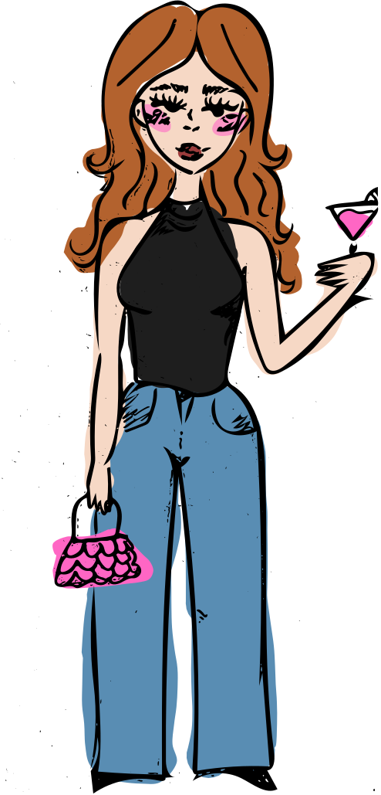
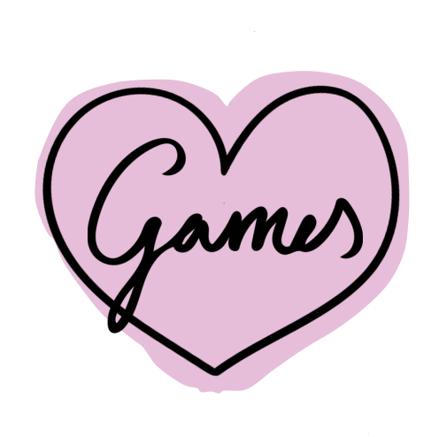
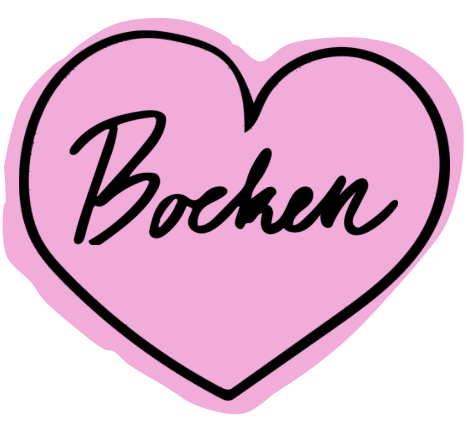

Hey girlie...

Mocht je this time of day niks te doen hebben, en wat inspiratie nodig hebben, kijk dan verder op mijn site! Als je klikt op mijn tekening krijg je wat meer informatie over mij...



Mocht je this time of day niks te doen hebben, en wat inspiratie nodig hebben, kijk dan verder op mijn site! Als je klikt op mijn tekening krijg je wat meer informatie over mij...

